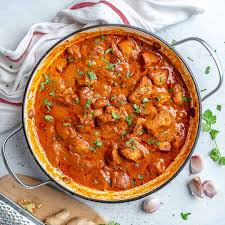

Learn how to make Butter Chicken with our easy-to-follow recipe.

Price : 150/-
Nutrition
kcal
fat
saturates
carbs
sugar
fibre
protein
salt
260
30g
9g
15g
8g
0.5g
15g
0.3g
Ingrediants:
1½ Tbsp Extra Virgin Olive Oil
1 Tsp Garlic Powder
2 Tsp Garam Masala
1 Tsp Ground Cumin
1 Tsp Chili Powder
Method
Step 1:
Heat 1 tablespoon oil in a large saucepan over medium high heat. Saute shallot and onion until soft and translucent. Stir in butter, lemon juice, ginger-garlic paste, 1 teaspoon garam masala, chili powder, cumin and bay leaf. Cook, stirring, for 1 minute. Add tomato sauce, and cook for 2 minutes, stirring frequently. Stir in half-and-half and yogurt. Reduce heat to low, and simmer for 10 minutes, stirring frequently. Season with salt pepper. Remove from heat and set aside.
Step 2:
Heat 1 tablespoon oil in a large heavy skillet over medium heat. Cook chicken until lightly browned, about 10 minutes. Reduce heat, and season with 1 teaspoon garam masala and cayenne. Stir in a few spoonfuls of sauce, and simmer until liquid has reduced, and chicken is no longer pink. Stir cooked chicken into sauce.
Step 3:
Mix together cornstarch and water, then stir into the sauce. Cook for 5 to 10 minutes, or until thickened.